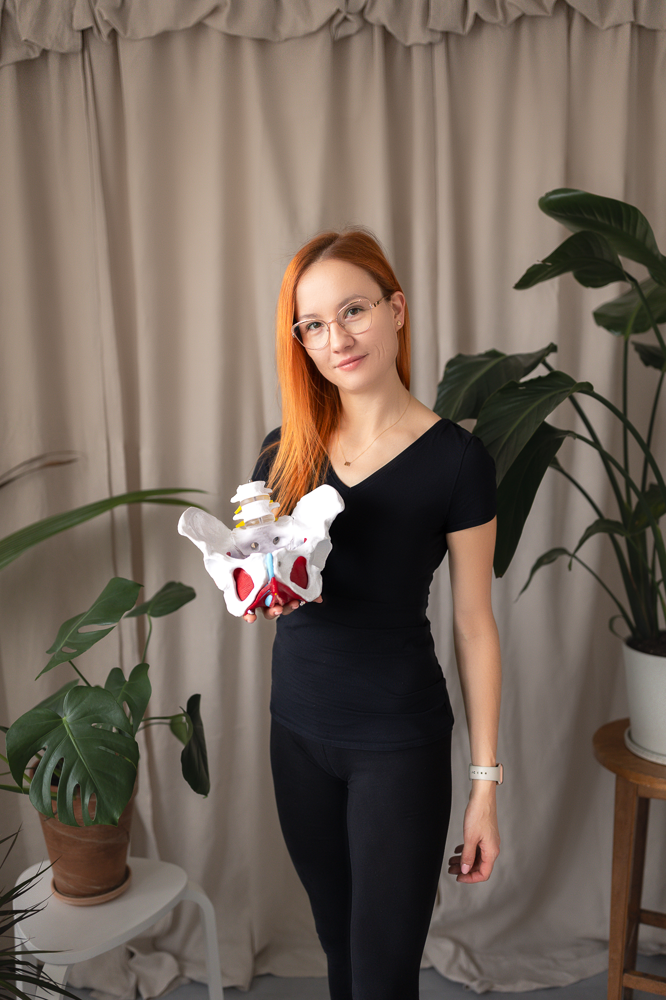

---
# Feel free to add content and custom Front Matter to this file.
# To modify the layout, see https://jekyllrb.com/docs/themes/#overriding-theme-defaults

layout: home
---
<section>
    <div>
        <h2>Witam na mojej stronie!</h2>

        <p> Nazywam się Gosia Radzymińska. </p>

        <p> Jestem fizjoterapeutką i ukończyłam studia licencjackie na kierunku wychowanie fizyczne na krakowskiej
            Akademii Wychowania Fizycznego.</p>

        

        <p>Specjalizuję się w pracy z kobietami, przygotowując je do porodu oraz wspierając w okresie połogu i
            dalszym macierzyństwie. </p>

        <p>Jako terapeutka uroginekologiczna, koncentruję się na pomocy w przypadkach takich
            jak nietrzymanie moczu, bolesne miesiączkowanie, dysfunkcje seksualne oraz problemy pojawiające się po
            porodzie. Wspieram kobiety w powrocie do formy sprzed ciąży.</p>

        <p>Moją misją jest uświadamianie o znaczeniu aktywnego stylu życia. Jestem pasjonatką sportów zimowych oraz
            jazdy konnej. Jako żona i mama dwójki małych rozrabiaków wiem jak wymagająca bywa codzienność więc zawsze do
            każdego pacjenta i każdej pacjentki podchodzę indywidualnie.</p>

        <h3>Zapraszam do kontaktu i współpracy!</h3>

        <section>
            <div>
                <h2>Opinie Pacjentek</h2>
                <div class="feedback">
                    <blockquote>
                        <p>Z Gosią spotkałam się po raz pierwszy tuż po porodzie SN. Gosia zaopiekowała się troskliwie o
                            mnie jak i o maluszka udzielając cennych rad w podstawowych czynnościach jak podnosznie
                            malucha, pozycje przy karmieniu, noszeniu tak aby zadbać o swój kręgosłup oraz
                            bezpieczeństwo dziecka. Ponadto masaże zrobione przez Gosię przyniosły mi odprężenie oraz
                            ogromną ulgę w bolących miejscach. Zadbała o każdy szczegół, np. świece, muzyka. Spotkania z
                            Gosią to regeneracja fizyczna oraz mentalna. Techniki masażu dostosowywane są do
                            indywidualnych potrzeb ciała na bieżąco. Gosia jest troskliwą, empatyczną i ciepłą osobą.
                            Bardzo polecam!</p>
                        <cite>Iwona</cite>
                    </blockquote>
                </div>
                <div class="feedback">
                    <blockquote>
                        <p>Byłam pacjentką Gosi przez rok. Poznałyśmy się trzy tygodnie po porodzie. Gosia pomogła mi
                            fizycznie i psychicznie bo oswoiła mnie z blizną po cięciu cesarskim. Wiem, że mogę na nią
                            liczyć w razie potrzeby.</p>
                        <cite>Monika</cite>
                    </blockquote>
                </div>
            </div>
        </section>

    </div>
</section>
